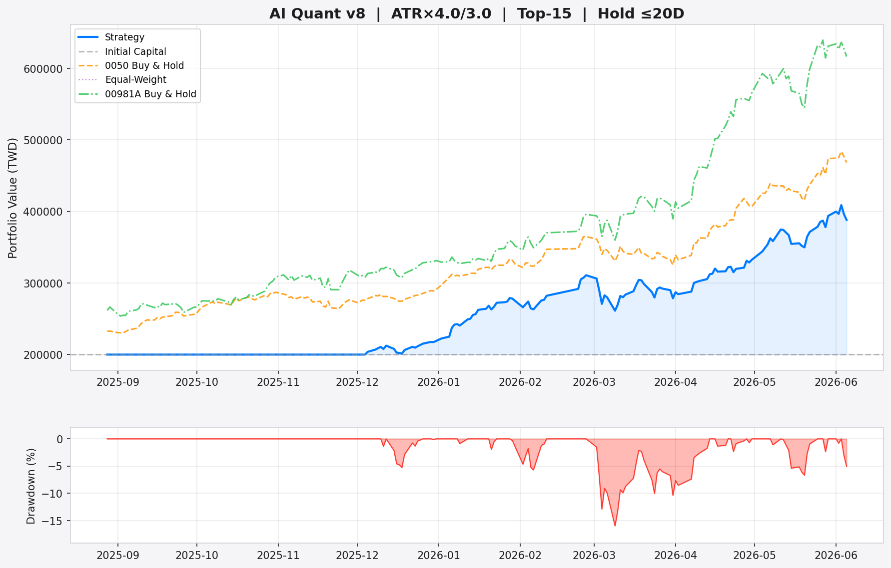

Event-Driven System | 報表日期: 2026-06-05 | 🛡️ ATR×4.0/3.0 🎯 Top-15 ⏱️ 最長 20 天 💰 成本: 買 0.143% + 賣 0.443%
| 股票 | 突破強度 | 突破均線 | 收盤價 | 量能 |
|---|---|---|---|---|
| 6547 高端疫苗 |
🔥 強力突破 | 近3日突破 | 48.7 | ✅ 量能放大 |
| 6525 捷敏-KY |
🔥 強力突破 | MA5 | 121.0 | ✅ 量能放大 |
| 3023 信邦 |
🔥 強力突破 | MA5 + MA10 | 329.0 | ✅ 量能放大 |
| 2002 中鋼 |
🔥 強力突破 | 近3日突破 | 19.3 | ⚠️ 量能不足 |
| 1519 華城 |
🔥 強力突破 | 近3日突破 | 851.0 | ✅ 量能放大 |
| 2609 陽明 |
🔥 強力突破 | MA5 | 54.5 | ✅ 量能放大 |
| 2308 台達電 |
📈 溫和突破 | 近3日突破 | 2300.0 | ⚠️ 量能不足 |
| 6446 藥華藥 |
📈 溫和突破 | 近3日突破 | 937.0 | ⚠️ 量能不足 |
| 4142 國光生 |
📈 溫和突破 | 近3日突破 | 17.9 | ⚠️ 量能不足 |
| 1707 葡萄王 |
📈 溫和突破 | 近3日突破 | 101.5 | ⚠️ 量能不足 |
| 2606 裕民 |
📈 溫和突破 | MA10 | 70.8 | ⚠️ 量能不足 |
| 3034 聯詠 |
📈 溫和突破 | MA10 | 492.0 | ⚠️ 量能不足 |
| 3711 日月光投控 |
📈 溫和突破 | 近3日突破 | 577.0 | ⚠️ 量能不足 |
| 3036 文曄 |
📈 溫和突破 | 近3日突破 | 281.0 | ⚠️ 量能不足 |
| 2404 漢唐 |
📈 溫和突破 | 近3日突破 | 1205.0 | ⚠️ 量能不足 |
| 2360 致茂 |
📈 溫和突破 | 近3日突破 | 2565.0 | ⚠️ 量能不足 |
| 2368 金像電 |
📈 溫和突破 | 近3日突破 | 1315.0 | ⚠️ 量能不足 |
| 2301 光寶科 |
📈 溫和突破 | 近3日突破 | 230.0 | ⚠️ 量能不足 |
| 2345 智邦 |
📈 溫和突破 | 近3日突破 | 2490.0 | ⚠️ 量能不足 |
| 2449 京元電子 |
📈 溫和突破 | 近3日突破 | 309.5 | ⚠️ 量能不足 |
信號基於昨日收盤產生，建議於明日開盤價附近掛單進場。 最晚出場日使用 XTAI 交易日曆計算
| 股票代號 | AI 評分 | 今日收盤 | 操作狀態 / 明日開盤建議 | 🎯 區間執行計畫 | 📊 歷史績效 | 🏛️ 籌碼 | |
|---|---|---|---|---|---|---|---|
| 2308 台達電 | 4.88 動能×2 55% 趨勢×1.5 93% 量能×0.5 47% RS×1 78% 法人×1 46% | 2300.0 距MA60: +20.7% 20日漲幅: +4.5% 量能比: 0.9x 52週位: - ⚠️ 距MA60達 +20.7%，注意回落風險 | 🟢 建議買進 #1 🟢 平開，按計畫正常進場 SPY -0.9%，市場平穩，開盤附近 2300.0 進場 | 停利: 2765.0 (+20.2%) 停損: 1951.2 (-15.2%) 最晚出場: 2026-07-06 | 歷史 2筆 | 勝率 100% | 均報酬 +20.1% | ⚪ 無資料 +0.0% | |
| 6770 力積電 | 4.47 動能×2 50% 趨勢×1.5 95% 量能×0.5 18% RS×1 55% 法人×1 100% | 74.6 距MA60: +18.9% 20日漲幅: +21.5% 量能比: 0.8x 52週位: - ⚠️ 近20日漲幅 +21.5%，可能過熱 | 🟢 建議買進 #2 🟢 平開＋法人大買，按計畫進場 SPY -0.9%，法人強力買超 +6.0%，開盤附近進場 | 停利: 95.3 (+27.8%) 停損: 59.0 (-20.9%) 最晚出場: 2026-07-06 | 歷史 4筆 | 勝率 50% | 均報酬 +3.1% | 🟢 大買 +6.0% | |
| 2301 光寶科 | 4.44 動能×2 68% 趨勢×1.5 67% 量能×0.5 57% RS×1 43% 法人×1 46% | 230.0 距MA60: +25.3% 20日漲幅: +12.7% 量能比: 1.1x 52週位: - ⚠️ 距MA60達 +25.3%，注意回落風險 | 🟢 建議買進 #3 🟢 平開，按計畫正常進場 SPY -0.9%，市場平穩，開盤附近 230.0 進場 | 停利: 291.6 (+26.8%) 停損: 183.8 (-20.1%) 最晚出場: 2026-07-06 | 歷史資料不足 | ⚪ 無資料 +0.0% | |
| 3149 正達 | 4.43 動能×2 97% 趨勢×1.5 10% 量能×0.5 62% RS×1 82% 法人×1 82% | 90.8 距MA60: +73.8% 20日漲幅: +88.2% 量能比: 1.1x 52週位: - ⚠️ 近20日漲幅 +88.2%，可能過熱 ⚠️ 距MA60達 +73.8%，注意回落風險 | 🟢 建議買進 #4 🟢 平開＋法人大買，按計畫進場 SPY -0.9%，法人強力買超 +2.7%，開盤附近進場 | 停利: 111.3 (+22.6%) 停損: 75.4 (-17.0%) 最晚出場: 2026-07-06 | 歷史資料不足 | 🟢 大買 +2.7% | |
| 3443 創意 | 4.42 動能×2 83% 趨勢×1.5 52% 量能×0.5 17% RS×1 73% 法人×1 75% | 4410.0 距MA60: +17.4% 20日漲幅: -15.4% 量能比: 0.8x 52週位: - | 🟢 建議買進 #5 🟢 平開，按計畫正常進場 SPY -0.9%，市場平穩，開盤附近 4410.0 進場 | 停利: 6153.0 (+39.5%) 停損: 3102.8 (-29.6%) 最晚出場: 2026-07-06 | 歷史 2筆 | 勝率 50% | 均報酬 +1.9% | 🟡 小買 +1.4% | |
| 2404 漢唐 | 4.40 動能×2 45% 趨勢×1.5 87% 量能×0.5 37% RS×1 15% 法人×1 97% | 1205.0 距MA60: +20.1% 20日漲幅: +18.7% 量能比: 0.9x 52週位: - ⚠️ 近20日漲幅 +18.7%，可能過熱 ⚠️ 距MA60達 +20.1%，注意回落風險 | 🟢 建議買進 #6 🟢 平開＋法人大買，按計畫進場 SPY -0.9%，法人強力買超 +5.2%，開盤附近進場 | 停利: 1489.8 (+23.6%) 停損: 991.4 (-17.7%) 最晚出場: 2026-07-06 | 歷史資料不足 | 🟢 大買 +5.2% | |
| 2344 華邦電 | 4.39 動能×2 88% 趨勢×1.5 17% 量能×0.5 53% RS×1 72% 法人×1 98% | 162.0 距MA60: +43.3% 20日漲幅: +51.4% 量能比: 1.0x 52週位: - ⚠️ 近20日漲幅 +51.4%，可能過熱 ⚠️ 距MA60達 +43.3%，注意回落風險 | 🟢 建議買進 #7 🟢 平開＋法人大買，按計畫進場 SPY -0.9%，法人強力買超 +5.6%，開盤附近進場 | 停利: 211.7 (+30.7%) 停損: 124.7 (-23.0%) 最晚出場: 2026-07-06 | 歷史 2筆 | 勝率 50% | 均報酬 +8.4% | 🟢 大買 +5.6% | |
| 2360 致茂 | 4.35 動能×2 53% 趨勢×1.5 62% 量能×0.5 27% RS×1 87% 法人×1 46% | 2565.0 距MA60: +27.4% 20日漲幅: +15.0% 量能比: 0.8x 52週位: - ⚠️ 近20日漲幅 +15.0%，可能過熱 ⚠️ 距MA60達 +27.4%，注意回落風險 | 🟢 建議買進 #8 🟢 平開，按計畫正常進場 SPY -0.9%，市場平穩，開盤附近 2565.0 進場 | 停利: 3237.0 (+26.2%) 停損: 2061.0 (-19.6%) 最晚出場: 2026-07-06 | 歷史 3筆 | 勝率 100% | 均報酬 +22.6% | ⚪ 無資料 +0.0% | |
| 2376 技嘉 | 4.34 動能×2 62% 趨勢×1.5 57% 量能×0.5 70% RS×1 60% 法人×1 90% | 369.0 距MA60: +28.9% 20日漲幅: +16.4% 量能比: 1.2x 52週位: - ⚠️ 近20日漲幅 +16.4%，可能過熱 ⚠️ 距MA60達 +28.9%，注意回落風險 | 🟢 建議買進 #9 🟢 平開＋法人大買，按計畫進場 SPY -0.9%，法人強力買超 +3.3%，開盤附近進場 | 停利: 443.8 (+20.3%) 停損: 312.9 (-15.2%) 最晚出場: 2026-07-06 | 歷史資料不足 | 🟢 大買 +3.3% | |
| 2345 智邦 | 4.34 動能×2 65% 趨勢×1.5 55% 量能×0.5 12% RS×1 80% 法人×1 46% | 2490.0 距MA60: +19.3% 20日漲幅: +4.8% 量能比: 0.7x 52週位: - | 🟢 建議買進 #10 🟢 平開，按計畫正常進場 SPY -0.9%，市場平穩，開盤附近 2490.0 進場 | 停利: 3108.0 (+24.8%) 停損: 2026.5 (-18.6%) 最晚出場: 2026-07-06 | 歷史 3筆 | 勝率 67% | 均報酬 +8.3% | ⚪ 無資料 +0.0% | |
| 3711 日月光投控 | 4.32 動能×2 63% 趨勢×1.5 73% 量能×0.5 38% RS×1 75% 法人×1 12% | 577.0 距MA60: +24.2% 20日漲幅: +11.8% 量能比: 0.9x 52週位: - ⚠️ 距MA60達 +24.2%，注意回落風險 | 🟢 建議買進 #11 🟢 平開，按計畫正常進場 SPY -0.9%，市場平穩，開盤附近 577.0 進場 | 停利: 723.5 (+25.4%) 停損: 467.1 (-19.0%) 最晚出場: 2026-07-06 | 歷史 5筆 | 勝率 100% | 均報酬 +16.2% | 🟠 小賣 -1.6% | |
| 2408 南亞科 | 4.29 動能×2 87% 趨勢×1.5 25% 量能×0.5 42% RS×1 68% 法人×1 88% | 360.0 距MA60: +36.6% 20日漲幅: +31.4% 量能比: 0.9x 52週位: - ⚠️ 近20日漲幅 +31.4%，可能過熱 ⚠️ 距MA60達 +36.6%，注意回落風險 | 🟢 建議買進 #12 🟢 平開＋法人大買，按計畫進場 SPY -0.9%，法人強力買超 +3.1%，開盤附近進場 | 停利: 469.8 (+30.5%) 停損: 277.6 (-22.9%) 最晚出場: 2026-07-06 | 歷史 3筆 | 勝率 67% | 均報酬 +1.2% | 🟢 大買 +3.1% | |
| 6446 藥華藥 | 4.22 動能×2 70% 趨勢×1.5 32% 量能×0.5 22% RS×1 57% 法人×1 77% | 937.0 距MA60: +31.9% 20日漲幅: +29.4% 量能比: 0.8x 52週位: - ⚠️ 近20日漲幅 +29.4%，可能過熱 ⚠️ 距MA60達 +31.9%，注意回落風險 | 🟢 建議買進 #13 🟢 平開，按計畫正常進場 SPY -0.9%，市場平穩，開盤附近 937.0 進場 | 停利: 1112.6 (+18.7%) 停損: 805.3 (-14.1%) 最晚出場: 2026-07-06 | 歷史資料不足 | 🟡 小買 +1.9% | |
| 2454 聯發科 | 4.20 動能×2 98% 趨勢×1.5 7% 量能×0.5 60% RS×1 97% 法人×1 46% | 4300.0 距MA60: +61.5% 20日漲幅: +18.5% 量能比: 1.1x 52週位: - ⚠️ 近20日漲幅 +18.5%，可能過熱 ⚠️ 距MA60達 +61.5%，注意回落風險 | 🟢 建議買進 #14 🟢 平開，按計畫正常進場 SPY -0.9%，市場平穩，開盤附近 4300.0 進場 | 停利: 5628.0 (+30.9%) 停損: 3304.0 (-23.2%) 最晚出場: 2026-07-06 | 歷史 2筆 | 勝率 50% | 均報酬 -2.0% | ⚪ 無資料 +0.0% | |
| 2356 英業達 | 4.14 動能×2 85% 趨勢×1.5 3% 量能×0.5 87% RS×1 70% 法人×1 85% | 76.8 距MA60: +52.1% 20日漲幅: +55.0% 量能比: 1.7x 52週位: - ⚠️ 近20日漲幅 +55.0%，可能過熱 ⚠️ 距MA60達 +52.1%，注意回落風險 | 🟢 建議買進 #15 🟢 平開＋法人大買，按計畫進場 SPY -0.9%，法人強力買超 +2.8%，開盤附近進場 | 停利: 96.2 (+25.3%) 停損: 62.2 (-19.0%) 最晚出場: 2026-07-06 | 歷史資料不足 | 🟢 大買 +2.8% | |
| 2383 | 4.12 | 4885.0 | 🟡 候選 (超出 Top-K) | - | 勝率 100% | ⚪ 無資料 +0.0% | |
| 2379 | 4.12 | 643.0 | 🟡 候選 (超出 Top-K) | - | - | 🟢 大買 +3.5% | |
| 2317 | 4.11 | 284.5 | 🟡 候選 (超出 Top-K) | - | - | 🟢 大買 +2.7% | |
| 3231 | 4.08 | 171.0 | 🟡 候選 (超出 Top-K) | - | - | 🟢 大買 +3.8% | |
| 2327 | 4.07 | 769.0 | 🟡 候選 (超出 Top-K) | - | 勝率 100% | ⚪ 無資料 +0.0% | |
| 3533 | 1.97 | 2365.0 | ⚪ 觀望 (評分不足) | - | - | - | - |
| 2412 | 1.71 | 141.0 | ⚪ 觀望 (評分不足) | - | - | - | - |
| 1519 | 1.70 | 851.0 | ⚪ 觀望 (評分不足) | - | - | - | - |
近 20 日三大法人（外資+投信+自營商）持股比重變化排名。Data: tw-institutional-stocker
| # | 股票 | 變化 | 持股 | 幅度 |
|---|---|---|---|---|
| 1 | 2492 華新科 | +10.0% | 31.6% | |
| 2 | 2481 強茂 | +9.3% | 36.3% | |
| 3 | 4916 事欣科 | +9.0% | 20.8% | |
| 4 | 6282 康舒 | +8.9% | 21.6% | |
| 5 | 3026 禾伸堂 | +6.4% | 26.0% | |
| 6 | 6770 力積電 | +6.0% | 18.4% | |
| 7 | 2399 映泰 | +5.8% | 9.1% | |
| 8 | 4571 鈞興-KY | +5.7% | 66.8% | |
| 9 | 8028 昇陽半導體 | +5.7% | 28.1% | |
| 10 | 3033 威健 | +5.6% | 22.2% | |
| 11 | 2344 華邦電 | +5.6% | 32.6% | |
| 12 | 2027 大成鋼 | +5.5% | 22.9% | |
| 13 | 2404 漢唐 | +5.2% | 29.9% | |
| 14 | 3376 新日興 | +5.2% | 30.0% | |
| 15 | 3413 京鼎 | +5.2% | 17.4% |
| # | 股票 | 變化 | 持股 | 幅度 |
|---|---|---|---|---|
| 1 | 2474 可成 | -9.9% | 7.4% | |
| 2 | 8150 南茂 | -9.2% | 43.2% | |
| 3 | 9904 寶成 | -8.0% | 30.3% | |
| 4 | 4540 全球傳動 | -6.9% | 4.5% | |
| 5 | 6278 台表科 | -6.0% | 12.6% | |
| 6 | 2548 華固 | -6.0% | 16.0% | |
| 7 | 8271 宇瞻 | -5.9% | 12.1% | |
| 8 | 4915 致伸 | -5.4% | 31.8% | |
| 9 | 2402 毅嘉 | -5.2% | 5.3% | |
| 10 | 4989 榮科 | -5.2% | 2.8% | |
| 11 | 2486 一詮 | -5.0% | 14.4% | |
| 12 | 3532 台勝科 | -4.8% | 46.0% | |
| 13 | 1727 中華化 | -4.7% | 2.7% | |
| 14 | 2449 京元電子 | -4.7% | 29.5% | |
| 15 | 6672 騰輝電子-KY | -4.7% | 17.2% |

判斷目前市場 regime 與近期趨勢，幫助你決定是否積極或保守操作。
歷史回撤事件的深度與持續時間，識別策略最脆弱的時期。
| # | 開始日 | 恢復日 | 最大深度 | 持續天數 |
|---|---|---|---|---|
| #1 | 2026-03-02 | 2026-04-14 | -16.0% | 43 天 |
| #2 | 2026-05-13 | 2026-05-25 | -6.7% | 12 天 |
| #3 | 2026-01-30 | 2026-02-11 | -5.7% | 12 天 |
| #4 | 2025-12-15 | 2025-12-24 | -5.3% | 9 天 |
| #5 | 2026-06-04 | 2026-06-05 | -5.0% | 1 天 |
近期表現是否仍在健康範圍內，偏離均值時需警惕。
連勝/連敗紀錄與近期走勢，評估策略是否處於熱手或冷卻期。
| 出場原因 | 次數 | 平均報酬 |
|---|---|---|
| 🟢 停利 | 57 筆 | +19.47% |
| ⚪ 時間到期 | 22 筆 | +0.55% |
| 🔴 停損 | 12 筆 | -13.97% |
每筆交易報酬的分布形狀，正偏態代表策略有良好的尾部收益。
| 報酬區間 | 筆數 | 佔比 | 分布 |
|---|---|---|---|
| < -15% | 6 | 6.6% | |
| -15~-10% | 9 | 9.9% | |
| -10~-5% | 6 | 6.6% | |
| -5~0% | 1 | 1.1% | |
| 0~5% | 2 | 2.2% | |
| 5~10% | 7 | 7.7% | |
| 10~20% | 35 | 38.5% | |
| > 20% | 25 | 27.5% |
哪些股票貢獻最多利潤、哪些持續虧損，幫助判讀信號品質。
| 股票 | 交易數 | 勝率 | 平均報酬 | 總貢獻 |
|---|---|---|---|---|
| 3037 | 5 | 100% | +20.7% | +103.3% |
| 3711 | 5 | 100% | +16.2% | +80.8% |
| 2368 | 4 | 100% | +18.8% | +75.2% |
| 5274 | 4 | 100% | +17.8% | +71.3% |
| 2360 | 3 | 100% | +22.6% | +67.7% |
| 2383 | 3 | 100% | +20.5% | +61.5% |
| 6285 | 2 | 100% | +27.4% | +54.8% |
| 3533 | 2 | 100% | +25.0% | +50.1% |
| 2303 | 3 | 100% | +15.4% | +46.1% |
| 2308 | 2 | 100% | +20.1% | +40.1% |
| 股票 | 交易數 | 勝率 | 平均報酬 | 總貢獻 |
|---|---|---|---|---|
| 2404 | 1 | 0% | -13.5% | -13.5% |
| 1301 | 1 | 0% | -13.6% | -13.6% |
| 1326 | 2 | 0% | -7.8% | -15.7% |
| 6239 | 1 | 0% | -17.1% | -17.1% |
| 2605 | 1 | 0% | -17.2% | -17.2% |
| 股票 | 進場日 | 出場日 | 進場價 | 出場價 | 觸發原因 | 持有天數 | 報酬率 |
|---|---|---|---|---|---|---|---|
| 3231 緯創 | 2026-06-03 | 2026-06-05 | 193.2 | 171.8 | 🔴 停損 | 2天 | -11.7% |
| 3017 奇鋐 | 2026-05-07 | 2026-06-04 | 2447.4 | 2710.0 | ⚪ 時間到期 | 20天 | +10.0% |
| 2885 元大金 | 2026-05-14 | 2026-06-03 | 56.4 | 62.3 | 🟢 停利 | 14天 | +9.8% |
| 2379 瑞昱 | 2026-05-12 | 2026-06-03 | 581.6 | 685.0 | 🟢 停利 | 16天 | +17.0% |
| 3149 正達 | 2026-05-27 | 2026-06-02 | 68.5 | 86.1 | 🟢 停利 | 4天 | +24.9% |
| 3044 健鼎 | 2026-05-05 | 2026-06-02 | 465.5 | 508.0 | ⚪ 時間到期 | 20天 | +8.4% |
| 2376 技嘉 | 2026-05-08 | 2026-05-29 | 316.3 | 362.3 | 🟢 停利 | 15天 | +13.8% |
| 2345 智邦 | 2026-04-28 | 2026-05-27 | 2252.2 | 2620.0 | ⚪ 時間到期 | 20天 | +15.5% |
| 2360 致茂 | 2026-04-27 | 2026-05-26 | 1982.0 | 2563.0 | 🟢 停利 | 20天 | +28.4% |
| 6285 啟碁 | 2026-05-07 | 2026-05-19 | 240.7 | 307.4 | 🟢 停利 | 8天 | +26.8% |
| 1301 台塑 | 2026-04-16 | 2026-05-14 | 53.0 | 46.2 | 🔴 停損 | 19天 | -13.6% |
| 1326 台化 | 2026-04-14 | 2026-05-13 | 50.0 | 46.1 | ⚪ 時間到期 | 20天 | -8.3% |
| 3036 文曄 | 2026-04-13 | 2026-05-12 | 223.7 | 270.0 | 🟢 停利 | 20天 | +19.9% |
| 1303 南亞 | 2026-04-10 | 2026-05-11 | 87.0 | 91.5 | ⚪ 時間到期 | 20天 | +4.5% |
| 2327 國巨* | 2026-04-23 | 2026-05-08 | 316.3 | 390.0 | 🟢 停利 | 10天 | +22.4% |
| 2303 聯電 | 2026-04-23 | 2026-05-07 | 79.6 | 97.4 | 🟢 停利 | 9天 | +21.6% |
| 2395 研華 | 2026-04-20 | 2026-05-07 | 375.4 | 445.0 | 🟢 停利 | 12天 | +17.7% |
| 6415 矽力*-KY | 2026-04-21 | 2026-05-05 | 377.9 | 449.8 | 🟢 停利 | 9天 | +18.2% |
| 2308 台達電 | 2026-04-14 | 2026-04-28 | 1806.8 | 2144.8 | 🟢 停利 | 10天 | +17.9% |
| 3037 欣興 | 2026-04-20 | 2026-04-27 | 644.6 | 835.0 | 🟢 停利 | 5天 | +28.6% |
| 月份 | 月報酬 |
|---|---|
| 2025-09 | +0.0% |
| 2025-10 | +0.0% |
| 2025-11 | +0.0% |
| 2025-12 | +9.5% |
| 2026-01 | +25.6% |
| 2026-02 | +13.0% |
| 2026-03 | -10.4% |
| 2026-04 | +19.3% |
| 2026-05 | +18.4% |
| 2026-06 | -1.4% |